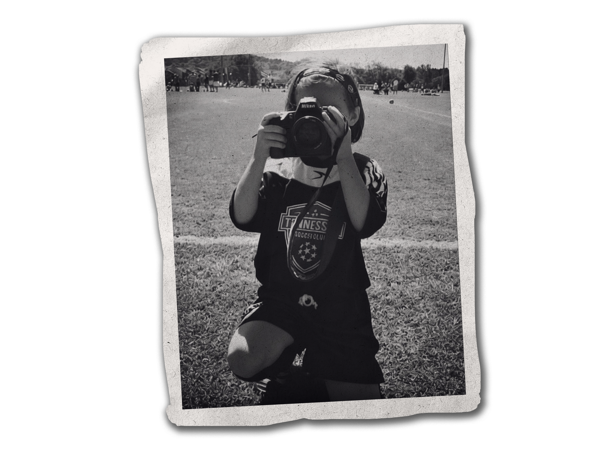

Hi, I'm Hallie!
I'm a photographer with a passion for capturing moments, telling stories, and finding the details that make each image unique. With a background in sports and a love for visual storytelling, I'm drawn to the energy, emotion, and spontaneity that photography can preserve.
Whether I'm photographing sports, events, or everyday moments, I aim to create images that feel genuine and give people something to look back on. For me, photography is about more than taking a picture. It's about capturing a feeling, a memory, or a moment that might otherwise pass by.